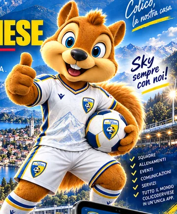

Calendario e gare
Partite e appuntamenti da fonti ufficiali, quando collegati.
SCD UNIVERSE SOCIAL
Notizie, territorio, persone e partite: la casa pubblica della comunità ColicoDerviese.

Le informazioni del Club in un'unica esperienza pubblica, chiara e coinvolgente.
Gare, settore giovanile, tifosi, territorio e vita associativa. Nessun contenuto inventato per riempire questa anteprima.
Partite e appuntamenti da fonti ufficiali, quando collegati.
Il racconto del Club, aggiornamenti e annunci autorizzati.
Fotografie, video ed esperienze condivise nel rispetto dei consensi.
Colico, Dervio e Alto Lario, con eventi realmente confermati.
Una casa per raccontare le opportunità commerciali, costruire relazioni e valorizzare il territorio.
Visibilità a bordo campo, eventi, comunicazione e progetti condivisi. Soluzioni da definire insieme, senza promettere numeri non verificati.
Contatta la societàLED, impianti e materiali ufficiali, da verificare per disponibilità e condizioni.
Attivazioni, ospitalità e incontri con famiglie, atleti e comunità.
Progetti editoriali, campagne e iniziative da costruire con la società.
Un ambiente per lavorare con dati attendibili, processi chiari e permessi verificati.
Il percorso approvato parte dalla Home pubblica SCD Universe. Solo dopo l'autenticazione R20 viene aperta l'area riservata corrispondente ai permessi dell'utente.
Ogni persona accede esclusivamente alle informazioni che la riguardano.